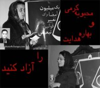

|
|
|
Browsing
Contact Us |
Campaigners |
Face to Face |
Tribune |
Interview |
News |
On the Web |
One Million |
Report
Farsi | Français | German | Italian | Spanish | العربية Also in this section
|
 Statement: Over 1000 Equal Rights and Human Rights Defenders Object to the Continued Detention of Mahboubeh Karami and Bahareh HedayatTuesday 5 August 2008 Change for Equality: Monday August 4, 2008: The continued detention of Mahboubeh Karami and Bahareh Hedayat demonstrates that the pressure on women’s rights activists continues unimpeded. It is approximately one and half months since Mahboubeh Karami, an active member of the One Million Signatures Campaign was arrested. The manner in which she was arrested was so unusual and strange, that no one believed that her time in detention would be long. But she remains in detention still. Mahboubeh Karami was arrested on the 13th of June, while on her way home by bus. The plain clothes security officials, whose organizational affiliation remains unclear, attacked her on the bus which was passing by a protest, beat her and without any logic or reason arrested her. She spent 3 weeks in Evin Prison’s Section 240, after which she was transferred along with 9 other women arrested in relation to the same protest to a small cell in the women’s ward of Evin Prison where they remained in isolation. After about 2 weeks in this joint cell, Mahboubeh was transferred to the general Ward of Evin prison. After follow-up by her family members and lawyers and despite the fact that Mahboubeh had not even been charged with committing a crime, court officials told her lawyer that a bail order in the amount of 100 Million Tomans was issued in her case. Her family does not have the capacity to post such a heavy bail amount, as such Mahboubeh Karami remains in prison. It is noteworthy to mention that such a high bail amount, does not correspond with the unusual manner in which she was arrested and the charges against her. It is apparent that this case is a clear example of violation of civil rights and laws intended to protect citizen’s rights. It should also be noted that Mahboubeh’s mother suffers from cancer and as a result was forced to undergo surgery in the absence of her daughter and after Mahboubeh’s arrest. She is currently receiving treatment for her cancer. Despite her illness she has gone to the court on many occasions to inquire about the condition of her daughter and to try to seek her release, but her inquiries have been left unanswered. On the other hand, all the others arrested along with Mahboubeh, have since been released. As such, there is no expectable reason for the continuation of Mahboubeh Karami’s arrest and no such reason has been provided by court officials. Bahareh Hedayat who is a student activist, the Secretary of the Women’s Commission of the Office to Foster Unity (the Leading National Student Organization), and a member of the One Million Signatures Campaign, was arrested on July 13, 2008 at her place of residence by security officials, and transferred to Section 209 of Evin Prison. After her arrest, security officials searched Bahareh’s home for over three hours and seized her private property, including her computer. It should be noted that on the same day, Mohammad Hashemi, the Secretary of Coordinating Council of the Office to Foster Unity, and a long time supporter of women’s rights and the women’s movement, was arrested in a similar manner to that of Bahareh Hedayat. To date, no official reason for the arrest of these two individuals has been provided. Officials have insisted that the judicial process of review of the files pending against Hedayat and Hashemi must remain closed. In reports published in government dailies, Hedayat and Hashemi have been accused of association with political groups outside of Iran. But the investigative judge in charge of their cases, Judge Matin Rasekh, has denied the validity of these reports. Women’s Rights activists recognize the leading role that Bahareh Hedayat has played in unifying the student and women’s rights movements—the most vibrant and civil of movements in contemporary Iran. The efforts of Bahreh and her colleagues, in identifying and organizing female students in relation to their demands and within the context of the Women’s Commission of the Office to Foster Unity, is well recognized. These efforts have managed to institutionalize the demands of female university students and elevate their importance in the otherwise traditional setting of the University. Bahareh’s courage in defense of the rights of female students is not hidden to anyone. As a result of her activities on behalf of women’s rights and student rights, Bahareh has been arrested three times in the last 2 years. The signatories of this statement object to the illegal arrest and detention of equal rights defenders. We further stress the need for officials to observe the human and civil rights of imprisoned activists and demand the immediate and unconditional release of Mahboubeh Karami and Bahareh Hedayat as well as other student activists currently in detention. |